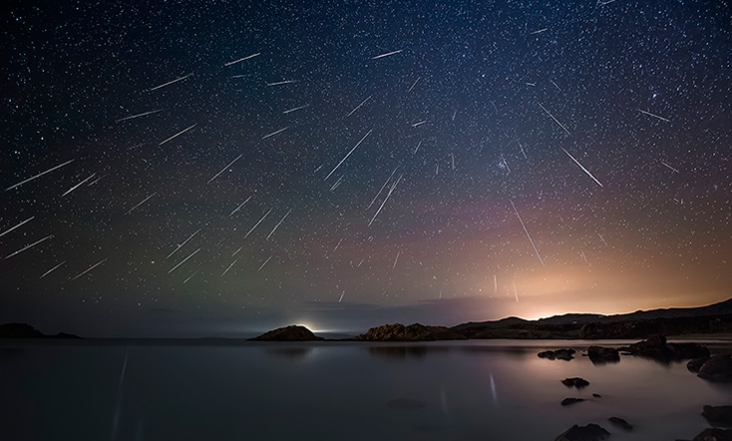
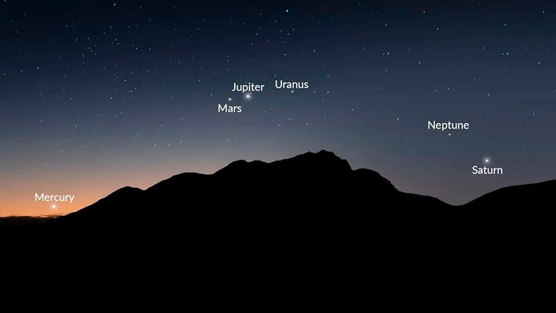
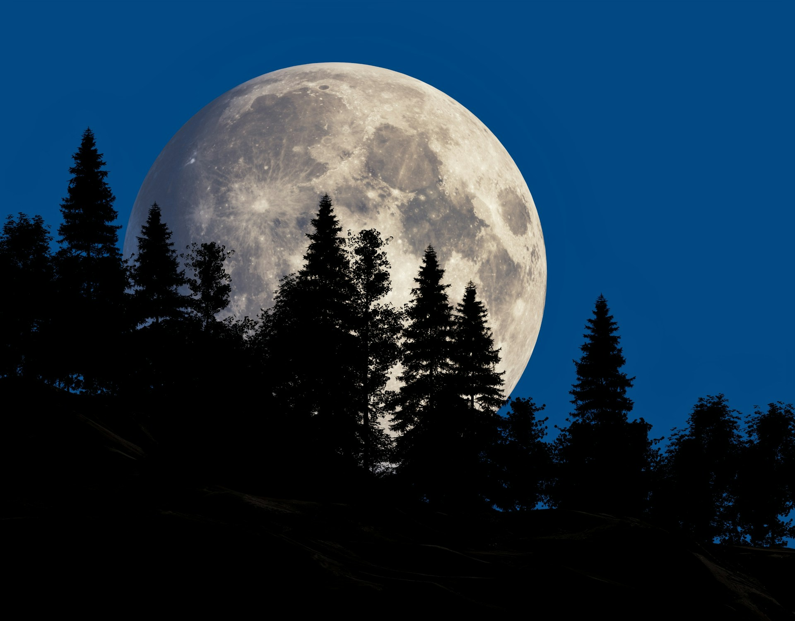
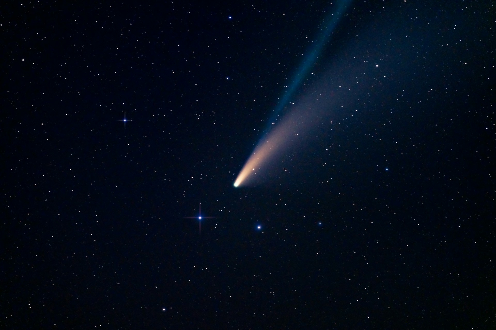

Eventos Astronómicos
El universo está en constante movimiento. Descubre los espectáculos celestes que no te puedes perder.
¿Qué observar?
Llamamos evento astronómico a cualquier fenómeno celeste observable, ya sea a simple vista o con telescopios, que ocurre en un momento y lugar determinados. Desde las fugaces estrellas hasta el paso lento de un cometa.
Tipos de Eventos

Lluvias de Meteoros
Partículas de polvo cósmico quemándose en la atmósfera. Las más famosas (Perseidas, Gemínidas) ocurren anualmente cuando la Tierra cruza la estela de un cometa.

Conjunciones
Alineaciones aparentes de planetas o la Luna desde nuestra perspectiva. Ofrecen vistas espectaculares al atardecer o amanecer.

Superlunas
Ocurren cuando la Luna Llena coincide con el perigeo (su punto más cercano a la Tierra), viéndose hasta un 14% más grande y 30% más brillante.

Cometas
Visitantes helados del sistema solar exterior que, al acercarse al Sol, despliegan colas de gas y polvo visibles en el cielo nocturno.
Calendario 2025 - 2026
Cuadrántidas
Pico de actividad de lluvia de meteoros.
Eclipse Solar Parcial
Visible en Europa y norte de Asia.
Perseidas
La lluvia de estrellas más popular del hemisferio norte.
Eclipse Lunar Total
La "Luna de Sangre".
Leónidas
Lluvia de meteoros rápida y brillante.
El Gran Eclipse Español
Eclipse solar total visible en Islandia y España.
💡 Consejos de Observación
- Aléjate de la ciudad: La contaminación lumínica es el peor enemigo.
- Adapta tu vista: Tus ojos tardan unos 20 minutos en ver en la oscuridad total.
- Revisa el clima: Nubes y humedad pueden arruinar la noche.
- Usa luz roja: Para consultar mapas sin deslumbrarte.
🌍 Visibilidad por Región
Ten en cuenta que no todos los eventos son globales.
Los eclipses tienen una franja de totalidad muy estrecha.
Las fases lunares son universales, pero su orientación cambia según el hemisferio.
Las lluvias de meteoros suelen verse mejor de madrugada, cuando tu ubicación en la Tierra avanza
hacia la nube de polvo.